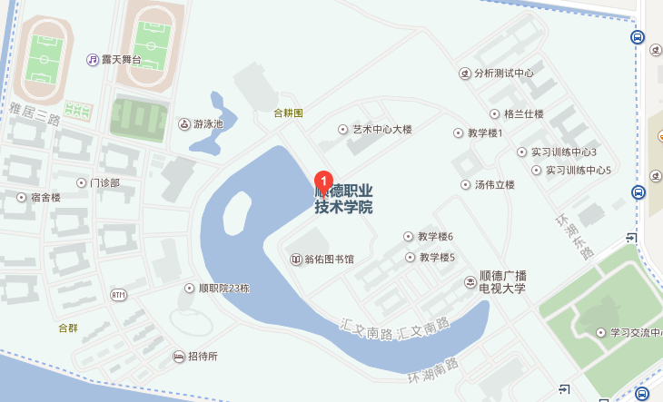

田柾国（Jung Kook），1997年9月1日出生于韩国釜山，韩国男子组合防弹少年团成员、歌手。
田柾国是防弹少年团的老幺，除了有一双无辜的双眼之外，他又萌又帅气的脸蛋也让他成为了演艺圈中的大势男，此外，田柾国擅长歌舞、饶舌、作词谱曲，田柾国从出道开始就参与作曲、作词以及制作，将真情实感融入歌曲，这在K-POP歌手身上难得一见，田柾国有着强硬的风格以及性感魅力
| 日期 | 专辑 |
|---|---|
| 2013年6月12日 | 2 COOL 4 SKOOL |
| 2014年6月4日 | No More Dream |
| 2015年2月26日 | WAKE UP |
联系方式
 13189635882 1070570026@qq.com